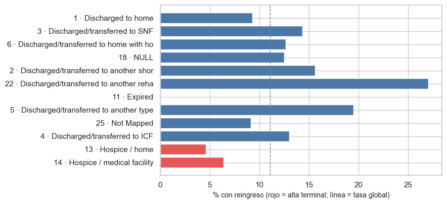

7. Auditoría de data leakage#
El momento de predicción se fija inmediatamente antes del alta, cuando la información generada durante la estancia ya está disponible pero el reingreso futuro todavía no ocurrió. Se audita cada variable original y derivada, identificadores, posibles proxies, AUC univariado, duplicados y pacientes compartidos.
from pathlib import Path
import re, sys, warnings
import numpy as np
import pandas as pd
import matplotlib.pyplot as plt
import seaborn as sns
from IPython.display import Markdown, display
project_root = Path.cwd().resolve()
while not (project_root / "_config.yml").exists():
if project_root.parent == project_root:
raise FileNotFoundError("No se encontró _config.yml. Ejecuta el notebook dentro de la carpeta del libro.")
project_root = project_root.parent
if str(project_root) not in sys.path:
sys.path.insert(0, str(project_root))
for _folder in ("tables", "figures"): # se crean si no existen
(project_root / _folder).mkdir(exist_ok=True)
from src.project_utils import *
configure_plots()
pd.set_option("display.max_columns", 80)
pd.set_option("display.width", 170)
pd.set_option("display.max_colwidth", 70)
TABLES = project_root / "tables"
def md_out(text):
display(Markdown(text))
train = load_train(include_terminal=True) # aquí se audita la población completa de entrenamiento
frame = prepare_frame(train)
num_cols, cat_cols = column_types(frame)
y, groups = frame[TARGET], frame[GROUP_COL]
1. Disponibilidad al momento de predicción#
Sí significa disponible antes del alta; Revisar señala que la fecha exacta
de cierre del registro puede depender del flujo del hospital; No identifica
objetivos o identificadores no aptos; Solo agrupar se reserva para
patient_nbr.
MEDS_SET = {"No", "Steady", "Up", "Down"}
def disponibilidad(c):
if c == RAW_TARGET:
return "No", "Es la fuente directa del objetivo futuro."
if c == TARGET:
return "No", "Es la variable objetivo derivada."
if c == ID_COL:
return "No", "Identificador del encuentro; puede codificar orden o sistema y no es una característica clínica."
if c == GROUP_COL:
return "Solo agrupar", "Identifica al paciente para split, CV y bootstrap; nunca entra al modelo."
if c == "discharge_disposition_id":
return "Sí, con cautela", "Se conoce al alta, pero puede identificar fallecimiento u hospicio y trivializar la no readmisión."
if c in ("diag_1", "diag_2", "diag_3", "diag_1_grupo", "diag_2_grupo", "diag_3_grupo"):
return "Revisar", "Diagnóstico registrado al cierre del encuentro; debe confirmarse que esté finalizado antes de emitir la predicción."
if c == "age_mid":
return "Sí", "Transformación determinística del rango de edad disponible."
if c in ("number_outpatient", "number_emergency", "number_inpatient"):
return "Sí", "Utilización durante el año previo al encuentro."
if c in ("max_glu_serum", "A1Cresult"):
return "Sí", "Resultado o ausencia de prueba registrado durante la estancia."
if c in ("change", "diabetesMed") or (c in frame and set(frame[c].dropna().unique()) <= MEDS_SET):
return "Sí", "Medicación administrada o ajustada durante la estancia."
return "Sí", "Dato registrado al ingreso o durante la estancia y disponible antes del alta."
disp = pd.DataFrame([(c, *disponibilidad(c)) for c in frame.columns],
columns=["variable", "disponible_al_momento_de_prediccion", "evidencia_temporal"])
display(disp[disp["disponible_al_momento_de_prediccion"] != "Sí"])
md_out(f"Se auditan **{len(disp)} variables originales o derivadas**. Las variables en `Revisar` requieren confirmación del flujo de registro local antes de un despliegue; no se inventa una temporalidad no documentada.")
| variable | disponible_al_momento_de_prediccion | evidencia_temporal | |
|---|---|---|---|
| 0 | encounter_id | No | Identificador del encuentro; puede codificar orden o sistema y no ... |
| 1 | patient_nbr | Solo agrupar | Identifica al paciente para split, CV y bootstrap; nunca entra al ... |
| 7 | discharge_disposition_id | Sí, con cautela | Se conoce al alta, pero puede identificar fallecimiento u hospicio... |
| 18 | diag_1 | Revisar | Diagnóstico registrado al cierre del encuentro; debe confirmarse q... |
| 19 | diag_2 | Revisar | Diagnóstico registrado al cierre del encuentro; debe confirmarse q... |
| 20 | diag_3 | Revisar | Diagnóstico registrado al cierre del encuentro; debe confirmarse q... |
| 49 | readmitted | No | Es la fuente directa del objetivo futuro. |
| 50 | reingreso_30d | No | Es la variable objetivo derivada. |
| 52 | diag_1_grupo | Revisar | Diagnóstico registrado al cierre del encuentro; debe confirmarse q... |
| 53 | diag_2_grupo | Revisar | Diagnóstico registrado al cierre del encuentro; debe confirmarse q... |
| 54 | diag_3_grupo | Revisar | Diagnóstico registrado al cierre del encuentro; debe confirmarse q... |
Se auditan 55 variables originales o derivadas. Las variables en Revisar requieren confirmación del flujo de registro local antes de un despliegue; no se inventa una temporalidad no documentada.
2. Desempeño univariado: ¿alguna variable separa las clases por sí sola?#
Se usa el ranking del capítulo 5 (AUC univariado, con las categóricas codificadas fuera de pliegue). Se agregan los identificadores, que podrían codificar orden temporal u hospital sin ser realmente predictivos.
ranking = pd.read_csv(TABLES / "ranking_univariado.csv")
auc_rows = ranking[["variable", "AUC univariado"]].copy()
auc_rows = pd.concat([auc_rows, pd.DataFrame([
{"variable": ID_COL, "AUC univariado": univariate_auc(frame[ID_COL], y)},
{"variable": GROUP_COL, "AUC univariado": univariate_auc(frame[GROUP_COL], y)},
{"variable": RAW_TARGET, "AUC univariado": 1.0},
{"variable": TARGET, "AUC univariado": 1.0},
])], ignore_index=True).drop_duplicates("variable", keep="last")
todo = auc_rows.sort_values("AUC univariado", ascending=False).reset_index(drop=True)
todo["alerta"] = np.select(
[todo["AUC univariado"] > 0.90, todo["AUC univariado"] > 0.75],
["ALERTA (>0,90)", "revisar (>0,75)"], default="sin alerta"
)
display(todo.head(12).round(4))
pred_only = todo[~todo.variable.isin([RAW_TARGET, TARGET, ID_COL, GROUP_COL])]
mx = pred_only.iloc[0]
md_out(f"La predictora con mayor señal individual es **{mx['variable']}** (AUC {es(mx['AUC univariado'], 3)}). "
+ ("Ninguna predictora supera 0,75; no aparece un proxy evidente del target." if mx['AUC univariado'] <= 0.75 else "Las predictoras por encima de 0,75 requieren revisión de dominio.")
+ " Los AUC iguales a 1 de `readmitted` y `reingreso_30d` confirman por qué ambos se excluyen.")
| variable | AUC univariado | alerta | |
|---|---|---|---|
| 0 | reingreso_30d | 1.0000 | ALERTA (>0,90) |
| 1 | readmitted | 1.0000 | ALERTA (>0,90) |
| 2 | number_inpatient | 0.6096 | sin alerta |
| 3 | discharge_disposition_id | 0.5748 | sin alerta |
| 4 | num_medications | 0.5431 | sin alerta |
| 5 | time_in_hospital | 0.5429 | sin alerta |
| 6 | number_diagnoses | 0.5406 | sin alerta |
| 7 | number_emergency | 0.5328 | sin alerta |
| 8 | insulin | 0.5309 | sin alerta |
| 9 | medical_specialty | 0.5286 | sin alerta |
| 10 | number_outpatient | 0.5226 | sin alerta |
| 11 | age | 0.5219 | sin alerta |
La predictora con mayor señal individual es number_inpatient (AUC 0,610). Ninguna predictora supera 0,75; no aparece un proxy evidente del target. Los AUC iguales a 1 de readmitted y reingreso_30d confirman por qué ambos se excluyen.
3. Altas por fallecimiento u hospicio#
Un paciente que fallece o pasa a hospicio al alta no puede reingresar. Esos encuentros tienen resultado «sin reingreso» por definición,
no por lo que ocurrió con su salud. Incluirlos hace que la variable discharge_disposition_id parezca más informativa de lo que es y mezcla
dos poblaciones distintas. Se identifican leyendo IDS_mapping.csv (descripciones que contienen expired u hospice).
labels = discharge_labels()
term_ids = terminal_disposition_ids()
d = train.groupby("discharge_disposition_id")[TARGET].agg(["count", "mean"]).rename(columns={"count": "encuentros", "mean": "tasa de reingreso"})
d["descripción"] = [labels.get(int(i), "") for i in d.index]
d["terminal"] = d.index.isin(term_ids)
d = d.sort_values("encuentros", ascending=False)
mostrar = pd.concat([d.head(10), d[d["terminal"]]]).drop_duplicates()
display(mostrar.assign(**{"tasa de reingreso": mostrar["tasa de reingreso"].round(3)}))
fig, ax = plt.subplots(figsize=(9, 4.2))
t = pd.concat([d.head(10), d[d["terminal"] & (d["encuentros"] >= 20)]]).drop_duplicates().iloc[::-1]
ax.barh([f"{i} · {str(desc)[:38]}" for i, desc in zip(t.index, t["descripción"])], t["tasa de reingreso"] * 100,
color=np.where(t["terminal"], "#e45756", "#4c78a8"))
ax.axvline(100 * y.mean(), color="gray", ls="--", lw=1); ax.set_xlabel("% con reingreso (rojo = alta terminal; línea = tasa global)")
plt.tight_layout(); save_figure(fig, "07_altas_terminales.png"); plt.show()
| encuentros | tasa de reingreso | descripción | terminal | |
|---|---|---|---|---|
| discharge_disposition_id | ||||
| 1 | 48109 | 0.093 | Discharged to home | False |
| 3 | 11235 | 0.144 | Discharged/transferred to SNF | False |
| 6 | 10304 | 0.126 | Discharged/transferred to home with home health service | False |
| 18 | 2927 | 0.125 | NULL | False |
| 2 | 1704 | 0.156 | Discharged/transferred to another short term hospital | False |
| 22 | 1591 | 0.271 | Discharged/transferred to another rehab fac including rehab units ... | False |
| 11 | 1310 | 0.000 | Expired | True |
| 5 | 949 | 0.195 | Discharged/transferred to another type of inpatient care institution | False |
| 25 | 800 | 0.091 | Not Mapped | False |
| 4 | 667 | 0.130 | Discharged/transferred to ICF | False |
| 13 | 325 | 0.046 | Hospice / home | True |
| 14 | 297 | 0.064 | Hospice / medical facility | True |
| 19 | 6 | 0.000 | Expired at home. Medicaid only, hospice. | True |
| 20 | 2 | 0.000 | Expired in a medical facility. Medicaid only, hospice. | True |

mask_t = train["discharge_disposition_id"].isin(term_ids)
n_t, rate_t, rate_resto = int(mask_t.sum()), float(y[mask_t].mean()) if mask_t.any() else np.nan, float(y[~mask_t].mean())
excluir = bool(n_t > 0 and rate_t < 0.02)
decision = pd.DataFrame([{"excluir_terminales": excluir, "codigos": ",".join(map(str, term_ids)), "n_excluidos_train": n_t,
"pct_excluidos": 100 * n_t / len(train), "tasa_reingreso_terminales": rate_t, "tasa_reingreso_resto": rate_resto,
"criterio": "excluir si hay altas terminales y su tasa de reingreso es < 2 %"}])
decision.to_csv(TABLES / "decision_poblacion.csv", index=False)
md_out(f"Códigos terminales: `{term_ids}`. Encuentros en entrenamiento: **{es(n_t, 0)}** ({es(n_t / len(train), 2, pct=True)}); tasa de reingreso: **{es(rate_t, 2, pct=True)}** "
f"frente a {es(rate_resto, 1, pct=True)} en el resto.\n\n"
+ (f"**Decisión (criterio fijado antes de mirar el resultado: excluir si la tasa es < 2 %):** se **excluyen** estos encuentros de la población de modelado. "
"La regla es clínica (no pueden reingresar), no estadística, y se aplica **después** de la partición, así que la prueba no se contamina. "
"Los capítulos 8 y 9 leen esta decisión." if excluir else
"**Decisión:** la tasa no es cercana a cero, así que se conservan los encuentros y se documenta la limitación."))
Códigos terminales: [11, 13, 14, 19, 20, 21]. Encuentros en entrenamiento: 1.940 (2,38 %); tasa de reingreso: 1,75 % frente a 11,3 % en el resto.
Decisión (criterio fijado antes de mirar el resultado: excluir si la tasa es < 2 %): se excluyen estos encuentros de la población de modelado. La regla es clínica (no pueden reingresar), no estadística, y se aplica después de la partición, así que la prueba no se contamina. Los capítulos 8 y 9 leen esta decisión.
4. Duplicados y entidades repetidas entre particiones#
Se comprueba que ningún paciente esté en entrenamiento y prueba a la vez, se compara con lo que ocurriría con una partición al azar de filas y se mide cuánto se parecen los resultados de un mismo paciente (dependencia que justifica la validación por grupos).
test_full = load_test(include_terminal=True)
test_ids = set(test_full[GROUP_COL])
overlap = len(set(groups) & test_ids)
predictor_cols = [c for c in train.columns if c not in {ID_COL, GROUP_COL, RAW_TARGET, TARGET}]
train_hash = pd.util.hash_pandas_object(train[predictor_cols], index=False)
test_hash = pd.util.hash_pandas_object(test_full[predictor_cols], index=False)
shared = set(train_hash.unique()) & set(test_hash.unique())
duplicate_audit = pd.DataFrame([
{"comprobación": "duplicados exactos dentro de training", "resultado": int(train[predictor_cols].duplicated().sum())},
{"comprobación": "duplicados exactos dentro de test", "resultado": int(test_full[predictor_cols].duplicated().sum())},
{"comprobación": "patrones predictores compartidos train/test", "resultado": len(shared)},
{"comprobación": "filas test afectadas por patrón compartido", "resultado": int(test_hash.isin(shared).sum())},
{"comprobación": "pacientes compartidos train/test", "resultado": overlap},
])
duplicate_audit.to_csv(TABLES / "auditoria_duplicados.csv", index=False)
display(duplicate_audit)
rng = np.random.default_rng(RANDOM_STATE)
perm = rng.permutation(len(frame)); cut = int(0.8 * len(perm))
tr_i, va_i = perm[:cut], perm[cut:]
naive_share = frame.iloc[va_i][GROUP_COL].isin(set(frame.iloc[tr_i][GROUP_COL])).mean()
orden = frame.sort_values(ID_COL).copy(); orden["n"] = orden.groupby(GROUP_COL).cumcount()
par = orden[orden["n"] < 2].pivot(index=GROUP_COL, columns="n", values=TARGET).dropna()
phi = float(par[0].corr(par[1])) if len(par) > 10 else np.nan
md_out(f"La partición agrupada tiene **{overlap} pacientes compartidos**. Una partición aleatoria por filas contaminaría {es(naive_share, 1, pct=True)} de la validación. La correlación entre los resultados de los dos primeros encuentros de pacientes repetidos es {es(phi, 3)}, por lo que se mantiene la validación por grupos.")
| comprobación | resultado | |
|---|---|---|
| 0 | duplicados exactos dentro de training | 0 |
| 1 | duplicados exactos dentro de test | 0 |
| 2 | patrones predictores compartidos train/test | 0 |
| 3 | filas test afectadas por patrón compartido | 0 |
| 4 | pacientes compartidos train/test | 0 |
La partición agrupada tiene 0 pacientes compartidos. Una partición aleatoria por filas contaminaría 41,6 % de la validación. La correlación entre los resultados de los dos primeros encuentros de pacientes repetidos es 0,037, por lo que se mantiene la validación por grupos.
5. Conclusión de la auditoría#
final = disp.merge(todo[["variable", "AUC univariado", "alerta"]], on="variable", how="left")
final["posible_proxy_del_target"] = np.where(
final.variable.isin([RAW_TARGET, TARGET]), "Sí: contiene o deriva directamente del target",
np.where(final["AUC univariado"].gt(0.75), "Requiere revisión por señal univariada alta", "Sin evidencia cuantitativa directa")
)
final["riesgo_de_leakage"] = np.select([
final.variable.isin([RAW_TARGET, TARGET]),
final.variable.isin([ID_COL, GROUP_COL]),
final.variable.eq("discharge_disposition_id"),
final["disponible_al_momento_de_prediccion"].eq("Revisar"),
], ["Alto", "Alto si se usara como predictor", "Medio", "Medio"], default="Bajo observable")
def decision_variable(row):
v = row.variable
if v in (RAW_TARGET, TARGET): return "Excluir del conjunto X"
if v == ID_COL: return "Excluir; identificador"
if v == GROUP_COL: return "Usar solo para agrupación"
if v == "discharge_disposition_id": return "Conservar tras excluir altas terminales; documentar"
if v in ("diag_1", "diag_2", "diag_3"): return "No usar cruda; sustituir por grupo CIE-9"
if v in ("diag_1_grupo", "diag_2_grupo", "diag_3_grupo"): return "Conservar; validar disponibilidad local"
return "Conservar como candidata"
final["decision"] = final.apply(decision_variable, axis=1)
final["justificacion"] = final.apply(
lambda r: r.evidencia_temporal + (f" AUC univariado={r['AUC univariado']:.3f}." if pd.notna(r["AUC univariado"]) else " No se calcula AUC porque no entra directamente al modelo."), axis=1
)
final = final[["variable", "AUC univariado", "disponible_al_momento_de_prediccion", "posible_proxy_del_target", "riesgo_de_leakage", "decision", "justificacion"]]
final.to_csv(TABLES / "auditoria_fuga.csv", index=False)
display(final[final["riesgo_de_leakage"] != "Bajo observable"].round(3))
md_out("**Conclusión:** identificadores y objetivos quedan fuera de X; `patient_nbr` solo agrupa. Los diagnósticos se usan agrupados y quedan sujetos a confirmación temporal. No hay pacientes compartidos ni predictoras con AUC sospechosamente cercano a 1. La ausencia de evidencia observable no elimina el riesgo residual de metadatos clínicos incompletos.")
| variable | AUC univariado | disponible_al_momento_de_prediccion | posible_proxy_del_target | riesgo_de_leakage | decision | justificacion | |
|---|---|---|---|---|---|---|---|
| 0 | encounter_id | 0.507 | No | Sin evidencia cuantitativa directa | Alto si se usara como predictor | Excluir; identificador | Identificador del encuentro; puede codificar orden o sistema y no ... |
| 1 | patient_nbr | 0.511 | Solo agrupar | Sin evidencia cuantitativa directa | Alto si se usara como predictor | Usar solo para agrupación | Identifica al paciente para split, CV y bootstrap; nunca entra al ... |
| 7 | discharge_disposition_id | 0.575 | Sí, con cautela | Sin evidencia cuantitativa directa | Medio | Conservar tras excluir altas terminales; documentar | Se conoce al alta, pero puede identificar fallecimiento u hospicio... |
| 18 | diag_1 | NaN | Revisar | Sin evidencia cuantitativa directa | Medio | No usar cruda; sustituir por grupo CIE-9 | Diagnóstico registrado al cierre del encuentro; debe confirmarse q... |
| 19 | diag_2 | NaN | Revisar | Sin evidencia cuantitativa directa | Medio | No usar cruda; sustituir por grupo CIE-9 | Diagnóstico registrado al cierre del encuentro; debe confirmarse q... |
| 20 | diag_3 | NaN | Revisar | Sin evidencia cuantitativa directa | Medio | No usar cruda; sustituir por grupo CIE-9 | Diagnóstico registrado al cierre del encuentro; debe confirmarse q... |
| 49 | readmitted | 1.000 | No | Sí: contiene o deriva directamente del target | Alto | Excluir del conjunto X | Es la fuente directa del objetivo futuro. AUC univariado=1.000. |
| 50 | reingreso_30d | 1.000 | No | Sí: contiene o deriva directamente del target | Alto | Excluir del conjunto X | Es la variable objetivo derivada. AUC univariado=1.000. |
| 52 | diag_1_grupo | 0.521 | Revisar | Sin evidencia cuantitativa directa | Medio | Conservar; validar disponibilidad local | Diagnóstico registrado al cierre del encuentro; debe confirmarse q... |
| 53 | diag_2_grupo | 0.507 | Revisar | Sin evidencia cuantitativa directa | Medio | Conservar; validar disponibilidad local | Diagnóstico registrado al cierre del encuentro; debe confirmarse q... |
| 54 | diag_3_grupo | 0.515 | Revisar | Sin evidencia cuantitativa directa | Medio | Conservar; validar disponibilidad local | Diagnóstico registrado al cierre del encuentro; debe confirmarse q... |
Conclusión: identificadores y objetivos quedan fuera de X; patient_nbr solo agrupa. Los diagnósticos se usan agrupados y quedan sujetos a confirmación temporal. No hay pacientes compartidos ni predictoras con AUC sospechosamente cercano a 1. La ausencia de evidencia observable no elimina el riesgo residual de metadatos clínicos incompletos.